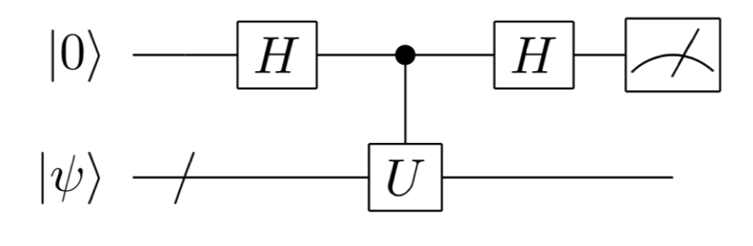

2-2. Hadamard test¶
As the simplest quantum algorithm, let’s consider the following quantum circuit (Figure 1) called the Hadamard test. That is, the first bit is initialized to \(|0\rangle\), the second and subsequent bits are initialized to state \(|\psi\rangle\),and the Hadamard gate is first applied to the first bit. Then, the control unitary operator \(\Lambda(U)\) (see below) is applied, Hadamard gate is again applied to the first bit, and finally the first bit is measured.
The control unitary operator \(\Lambda(U)\) is a unitary operation that does nothing when the first qubit is \(|0\rangle\), and apply \(U\) when the first qubit is \(|1\rangle\).
In other words, depending on whether the first qubit is a \(|0\rangle\) or a \(|1\rangle\), a conditional branch is executed to “do nothing” or “let \(U\) act”. In a conventional computer, conditional branches cannot be executed simultaneously, but in a quantum computer, conditional branches can be executed simultaneously and in parallel by using superposition of states.
We will consider the operation of this Hadamard test. At first, for simplicity, we will consider the case where quantum state \(|\psi \rangle\) is the eigenstates (eigenvectors) of the eigenvalue \(e^{i \lambda}\) of the unitary operation (matrix) \(U\) .
\begin{eqnarray} U|\psi \rangle = e^{i \lambda} |\psi\rangle. \end{eqnarray}
By letting the Hadamard operation \(H\) act on the first qubit, we have
\begin{eqnarray} \frac{1}{\sqrt{2}} (|0\rangle + |1\rangle) \otimes |\psi \rangle \end{eqnarray}
Then, by applying the control \(U\) operation eigenvalue :math:`e^{ilambda}` is obtained as the relative phase of the first qubit (this is called phase kickback):
\begin{eqnarray} &&\frac{1}{\sqrt{2}} (|0\rangle \otimes |\psi \rangle + |1\rangle \otimes U|\psi \rangle ) \\ &=&\frac{1}{\sqrt{2}} (|0\rangle \otimes |\psi \rangle +e^{i \lambda} |1\rangle \otimes |\psi \rangle ) \\ &=& \frac{1}{\sqrt{2}} (|0\rangle +e^{i \lambda} |1\rangle )\otimes |\psi \rangle. \end{eqnarray}
Finally, by applying the Hadamard operation to the first qubit, the following state is obtained.
\begin{eqnarray} \left(\frac{1+e^{i\lambda}}{2}|0\rangle +\frac{1-e^{i\lambda}}{2} |1\rangle \right)\otimes |\psi \rangle \label{eq01} \end{eqnarray}
The probability of getting the measurement result \(m=0,1\) when measuring the first qubit is the square of the coefficients of \(|0\rangle\) and \(|1\rangle\). This can be expressed by using \(m\) . (Substitute \(m=0,1\) to make sure they match.)
\begin{align} p_{m}=\left|\frac{1+(-1)^m e^{i\lambda}}{2}\right|^2 =\color{red}{\left|\frac{(1+(-1)^m \cos{\lambda})+i (-1)^m \sin{\lambda}}{2}\right|^2 =\frac{2+2 (-1)^m \cos \lambda}{4}} =\frac{1+(-1)^m \cos \lambda}{2} \end{align}
\(|\psi \rangle\), \(U\), and \(\langle \psi |\) are a column vector in \(2^n\) dimensions, \(2^n \times 2^n\) matrix, and a row vector in \(2^n\) dimensions. If we compute this Hadamard test on a classical computer, exponentially large memory allocation and number of operations are required. On the other hand, on a quantum computer \(m\) is sampled under a probability distribution \(p_m\).
If you want to estimate \(\cos \lambda\) with a certain error \(\epsilon\), then we only need to sample about a polynomial number of times of the inverse of \(\epsilon\).
If the same calculation is performed for general inputs, not necessarily eigenvectors, the pre-measurement state is
When \(p_0\), \(p_1\) are the probability of measuring the first bit and obtaining 0 or 1,
\begin{align} p_0 &= \color{red}{\left|(|0\rangle \langle 0| \otimes I)(|0\rangle \frac{I+U}{2} |\psi \rangle + |1\rangle \frac{I-U}{2}|\psi \rangle)\right|^2} \\ &= \color{red}{\left||0\rangle \frac{I+U}{2} |\psi \rangle \right|^2} \\ &= \color{red}{\left||0\rangle \right|^2 \left|\frac{I+U}{2} |\psi \rangle \right|^2} \\ &= \color{red}{\frac{\langle \psi | (I + U ^ \dagger) (I + U) | \psi \rangle }{4}} \\ &= \color{red}{\frac{\langle \psi | (I + U + U ^ \dagger + U ^ \dagger U) | \psi \rangle }{4}} \\ &= \color{red}{\frac{ \langle \psi | 2I | \psi \rangle + \langle \psi | U | \psi \rangle + \langle \psi | U ^ \dagger | \psi \rangle}{4}} \\ &= \color{red}{\frac{ 2 + \langle \psi | U | \psi \rangle + \overline{\langle \psi | U | \psi \rangle}}{4}} \\ &= \frac{1+ {\rm Re} \langle \psi | U | \psi \rangle }{2} \\ p_1 &= \frac{1- {\rm Re} \langle \psi | U | \psi \rangle }{2} \tag{1} \end{align}
In other words, if you run the Hadamard test on a quantum computer, you can estimate the value of unitary matrix :math:`U` sandwiched between vector :math:`| psi rangle` by taking the sample average of the measurement results. If the same value were to be obtained with a classical computer, it would take exponential time because the dimension of the vector or matrix grows exponentially as the number of qubits \(n\) grows.
After measuring the first qubit, the second qubit will be in the following state according to the measurement result \(m = 0, 1\) (normalization factors are omitted)
Now consider the case where \(U\) is a one-qubit unitary operation and its eigenvalues are \(\pm 1\). Using the eigenvectors \(|u_1\rangle\) and \(|u_{-1}\rangle\) corresponding to the eigenvalue \(\pm 1\), \(|\psi\rangle\) can be written as follow. \(|\psi\rangle = c_1|u_1\rangle + c_{-1}|u_{-1}\rangle\) . By substituting this to the state after measurement \(|\psi_0\rangle\) and \(|\psi_1\rangle\),
\begin{align} \color{red}{|\psi_0\rangle} &= \color{red}{\frac{I + U}{2}|\psi\rangle} \\ &= \color{red}{\frac{I + U}{2}(c_1|u_1\rangle + c_{-1}|u_{-1}\rangle)} \\ &= \color{red}{\frac{I}{2}(c_1|u_1\rangle + c_{-1}|u_{-1}\rangle) + \frac{U}{2}(c_1|u_1\rangle + c_{-1}|u_{-1}\rangle)} \\ &= \color{red}{\frac{1}{2}(c_1|u_1\rangle + c_{-1}|u_{-1}\rangle) + \frac{1}{2}(c_1U|u_1\rangle + c_{-1}U|u_{-1}\rangle) }\\ &= \color{red}{\frac{1}{2}(c_1|u_1\rangle + c_{-1}|u_{-1}\rangle) + \frac{1}{2}(c_1|u_1\rangle - c_{-1}|u_{-1}\rangle)} \\ &= \color{red}{c_1|u_1\rangle}\\ \end{align}
\begin{align} \color{red}{|\psi_1\rangle } &= \color{red}{\frac{I - U}{2}|\psi\rangle} \\ &= \color{red}{\frac{I - U}{2}(c_1|u_1\rangle + c_{-1}|u_{-1}\rangle)} \\ &= \color{red}{\frac{I}{2}(c_1|u_1\rangle + c_{-1}|u_{-1}\rangle) - \frac{U}{2}(c_1|u_1\rangle + c_{-1}|u_{-1}\rangle)} \\ &= \color{red}{\frac{1}{2}(c_1|u_1\rangle + c_{-1}|u_{-1}\rangle) - \frac{1}{2}(c_1U|u_1\rangle + c_{-1}U|u_{-1}\rangle)} \\ &= \color{red}{\frac{1}{2}(c_1|u_1\rangle + c_{-1}|u_{-1}\rangle) - \frac{1}{2}(c_1|u_1\rangle - c_{-1}|u_{-1}\rangle)} \\ &= \color{red}{c_{-1}|u_{-1}\rangle}\\ \end{align}
When we apply U to \(|\psi_0\rangle\) and \(|\psi_1\rangle\),
\begin{align} \color{red}{U|\psi_0\rangle } &= \color{red}{U(c_1|u_1\rangle)}\\ &= \color{red}{c_1(U|u_1\rangle)}\\ &= \color{red}{c_1|u_1\rangle}\\ &= \color{red}{|\psi_0\rangle} \\ \end{align}
\begin{align} \color{red}{U|\psi_1\rangle} &= \color{red}{U(c_{-1}|u_{-1}\rangle)}\\ &= \color{red}{c_{-1}(U|u_{-1}\rangle)}\\ &= \color{red}{(-1)c_{-1}|u_{-1}\rangle}\\ &= \color{red}{-|\psi_1\rangle} \\ \end{align}
it turns out that they are the eigenstates corresponding to the eigenvalue \(\pm 1\), respectively. Even when the eigenvalue is not \(\pm 1\), the state converges to the eigenstate of \(U\) when the output of the Hadamard test is repeated as input (those interested are encouraged to try the following example).
Implementation in SymPy¶
As a concrete example, let us consider the case \(U=H\) (Hadamard gate). Assume that the auxiliary qubit is \(|0\rangle\) and the input of the Hadamard test \(|\psi\rangle\) is also \(|0\rangle\).
[1]:
from sympy import *
from sympy.physics.quantum import *
from sympy.physics.quantum.qubit import Qubit,QubitBra
init_printing() # to show vectors and matrices nicely
from sympy.physics.quantum.gate import X,Y,Z,H,S,T,CNOT,SWAP,CPHASE,CGateS
[14]:
state = Qubit('00')
The matrix representation of control H operation is displayed with CGateS().
[15]:
ctrlH = CGateS(1,H(0))
represent(ctrlH,nqubits=2)
[15]:
Before the measurement, the state is
[16]:
H(1)*ctrlH*H(1)*state
[16]:
Calculations with SymPy gives us
[17]:
qapply(H(1)*ctrlH*H(1)*state)
[17]:
Using SymPy’s measure_partial function introduced in Chapter 1, post-measurement state and probability of getting 0 from measurement of the first qubit is
[18]:
from sympy.physics.quantum.qubit import measure_all, measure_partial, measure_all_oneshot, measure_partial_oneshot
measured_state_and_probability_zero = measure_partial(qapply(H(1)*ctrlH*H(1)*state),(1,))[0]
simplify(measured_state_and_probability_zero)
[18]:
[9]:
measured_state_zero = measured_state_and_probability_zero[0]
simplify(qapply(H(0)*measured_state_zero))
[9]:
Similarly, if you get a measurement result of 1 from the first qubit, we can confirm that the post measurement state is an eigenstate with eigenvalue -1. Please check this.
[10]:
measured_state_one = measure_partial(qapply(H(1)*ctrlH*H(1)*state),(1,))[1][0]
simplify(qapply(H(0)*measured_state_one))
[10]:
[ ]: